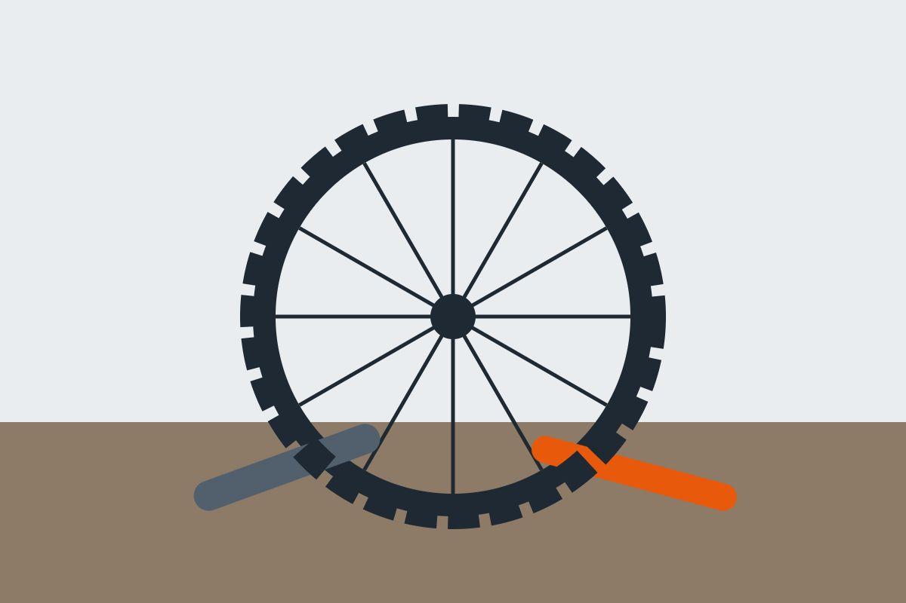

修理と料金
修理は、予約なしでも受け付けます。混んでいる時は、お待ちいただくことがあります。予約をすると、待たずに始められます。

パンク修理
穴をふさぐ修理は 1,100 円、30 分ほどです。チューブの交換は 2,200 円、タイヤごとの交換は 4,400 円からです。
ブレーキの調整
ブレーキのききが弱い、音が鳴る時は、調整で直ることがほとんどです。調整は 1,100 円、ブレーキのゴムの交換は 1,650 円からです。
チェーンの交換
伸びたチェーンは、外れやすくなります。交換は 3,300 円からです。
料金の一覧
| 修理 | 料金 | 時間の目安 |
|---|---|---|
| パンクの穴をふさぐ | 1,100 円 | 30 分 |
| チューブの交換 | 2,200 円 | 40 分 |
| ブレーキの調整 | 1,100 円 | 20 分 |
| チェーンの交換 | 3,300 円から | 40 分 |
| 点検（20 か所） | 2,200 円 | 30 分 |